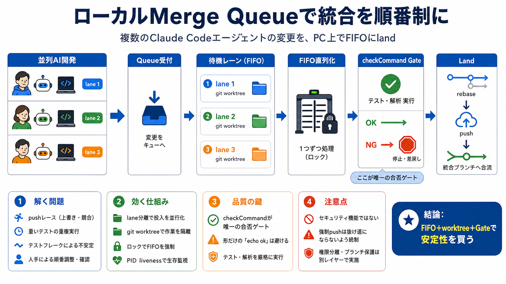

Improve Your Code Safety With a Merge Queue
the merged code is compatible with the main branch and reduces the chances of introducing instabilities or build failure…

並列AI開発の“統合待ち行列”
Claude Code エージェントが同時に変更を出しても、ローカルでFIFO直列化して land（リベース＋push）し、競合・無駄なビルド・フレークを抑えます。
統合を“順番制”にして衝突を構造的に回避
GitHubの思想（直列テスト）をPC上で$0コスト化
番号付き lane で順番を固定
laneごとに作業ツリー分離
合否ゲートはテスト/解析コマンド
pushレースと重複実行
複数の Claude Code エージェントが同じリポジトリへ“同時に”反映しようとすると、競合（pushレース）や重いビルド・テストの二重実行が起きやすくなります。
同一更新タイミングで取り込み順が崩れる
“統合前”に同種のビルド/テストが何度も走る
共有リソース依存で不安定に失敗（不確実性）
レビューや調整に時間が溶ける（自動化の利点が減る）
統合は“改札”を通る
各エージェントは自分専用の番号付きレーンに入ります。順番が来たときだけ統合ブランチへ land されます。
並列作業→統合待ちに登録
順番どおりに処理を確定
リベース＋pushで反映
GitHub Actions の従量課金なし・ローカルで完結（プライベートなら任意プランでも）
ロック＋worktree分離
直列化は“ロック”と“作業分離”で支えられます。laneごとに git worktree を使い、同じチェックアウトの同時書き換えを避けます。
番号ごとに作業ツリーを分ける
laneが並列に動いても衝突しにくい
統合の瞬間だけリベース＋push
タイムアウトではなくPIDの生存確認でロックを回収
合否は一本勝負
統合（land）の可否は checkCommand が通るかどうかだけで決まります。曖昧な後工程の破綻を減らせます。
通過＝統合、失敗＝統合しない（人の承認工程は意図的に無し）
テスト戦略の成熟度が直接リスクを左右する
合格時/非合格時の実挙動が“本当に同じ”に見えることを重視（例：単なる echo ok は薄い）
GitHubとローカルの違い
発想は同じ（統合前に直列化してテスト）ですが、ローカルで動くため Actions のコストやPR必須の運用が不要になります。
クラウドで直列テスト→統合（実行コスト・運用要件が増えやすい）
ローカルで FIFO land（$0コスト志向、プライベート任意プラン対応）
“本番統合の前に”テストで合否を判断し、破綻を先回りする
同時作業の衝突回避
lane は“分離単位”です。 git worktree により作業ツリーを分け、複数エージェントが同時に進めても同一チェックアウトを奪い合いません。
並列で開発・検証を走らせられる
同じ状態（同一作業ツリー）へ同時書き換えを避ける
競合とデバッグ時間を減らし、統合前検証の安定性を上げる
ロック事故を抑える
ロックの回収はタイムアウトではなく、PID の生存確認で行います。CIのタイミングずれや「ロックが永遠に残る」事故を抑える意図です。
障害時でもロックを自然に解放しやすくする
PID管理や障害時ログの運用方針が必要（“安全に見える”だけでは不十分）
障害時の回復手順・ログ確認を手順書化しておく
レビューなしで進む
設計上の前提は「人間レビューなし」です。通過した変更だけが land されるため、品質保証はテストスイートに強く依存します。
待ち時間を減らし、統合を高速に回せる
checkCommand を真に信頼できる内容にする必要がある
人間承認を入れたい場合は、別ブランチ運用や別テスト工程が要る
セキュリティではない
ガードレールは「ミスや慣習の逸脱」を防ぐ目的で、悪意ある操作への防御としては不十分です。シェルアクセスがあるなら回避され得ます。
安全対策＝手順逸脱の防止（誤操作寄り）
権限分離・ブランチ保護・権限設計は別レイヤーで担保
ブランチ保護の代替だと考えると期待外れになり得る
抜け道＝emergency hatch
緊急回避として環境変数を使った「保護ブランチへの強制push」という抜け道があります。これは“安全”ではなく、誤操作を避ける慣習として用意されています。
保護ブランチへの強制反映（環境変数）
敵対的状況や権限奪取への強い防御策ではない
乱用防止（手順・権限・監査ログ・監視）を別途設計
効く理由／危ない条件
最大の強みは、FIFO直列化と lane 分離で「統合タイミング競合」「重いビルドの二重実行」「テストフレーク」を構造的に抑えることです。
AI並列開発の“事故りやすい部分”を機械的に削減
checkCommandへの依存が強い＝テスト戦略次第
ロック回収や強制pushは便利だが、理解と運用統制が要る
人間レビューなし→承認をどこで担保するかが鍵
導入前の最小設計
導入するなら、checkCommandの強化、回避手順の統制、セキュリティは別レイヤー確保、の3点を前提にします。
信頼できるテスト/解析を入れる。形だけのゲートを避ける
PIDロック回収・emergency hatch の使い分けとログ確認
権限分離・ブランチ保護・監査ログを設計して“本丸”を守る
キュー詰まり時の方針、待ち行列の監視、ログ運用を決める
結論：安定性を買う設計
Claude Code Merge Queueは、ローカルFIFO統合と lane分離で競合・重複・フレークを抑えます。品質と安全は checkCommand と運用設計が担います。
直列化（FIFO）＋分離（worktree）＋ゲート（checkCommand）が核
English: reduce integration conflicts and flakiness locally.
日本語: 競合と不安定さをPC上で抑える。
統合の衝突を仕組みで抑える
品質保証はテスト依存
セキュリティ境界の代替ではない
the merged code is compatible with the main branch and reduces the chances of introducing instabilities or build failure…
Simulations were run with batch sizes of 1, 4, 8, and 16, and parallel queues were used for batch sizes greater than 1. …
each parallel workstream visible as a distinct chunk. Pick one and be consistent. After merging, delete the branch. GitH…
``` pull_request_rules: - name: merge using the merge queue conditions: - base=main - "#approved-reviews-by>=1" - check-…
33 lines (26 loc) · 2.25 KB Copy raw file Download raw file Outline Edit and raw actions # Capabilities and Limitat…